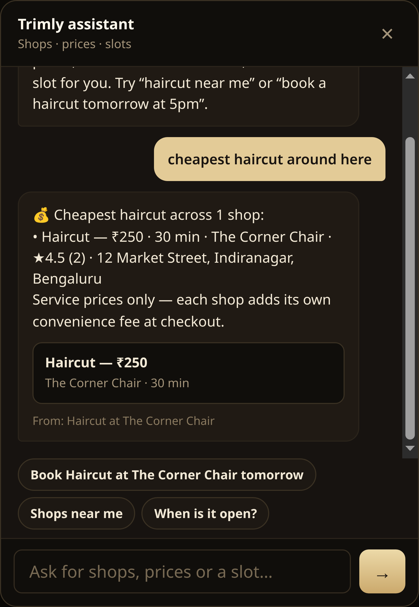
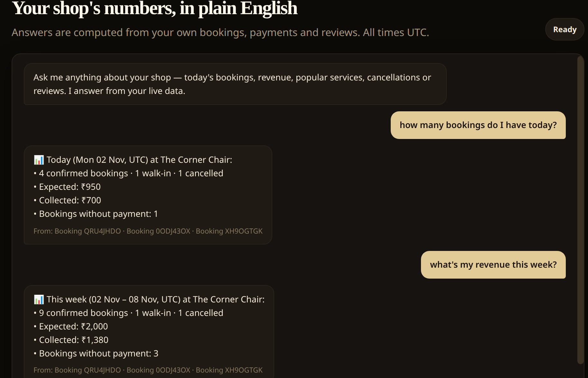

Build note · Trimly
Or a free slot. Or today’s revenue.
Nine slides on grounding a chat layer in your own database.
cheapest haircut around here
💰 ₹250 · 30 min · The Corner Chair · ★4.5
From: Haircut at The Corner Chair
The trap
The rule
Retrieval
BM25 (k1 1.5, b 0.75) · rebuilt on every request · no API key · no index job · works offline
Customer side

Owner side

Booking
Evidence
Retrieval quality is a correctness feature here, not a tuning knob.
Your turn
I built this for a barbershop booking platform: two assistants, one retrieval layer, every answer traceable to a row.
The full write-up — architecture, request flow, and the “today vs this week” bug — is in the comments.